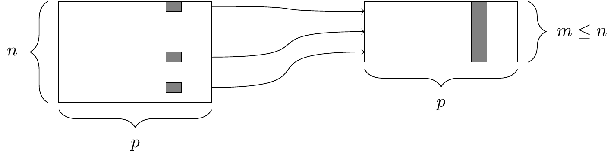
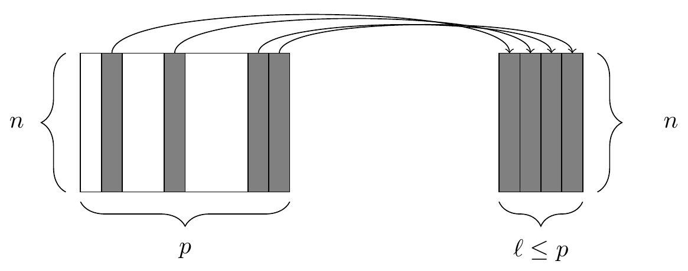
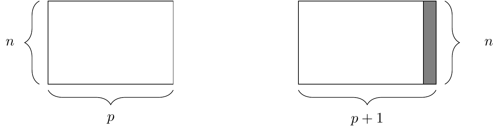
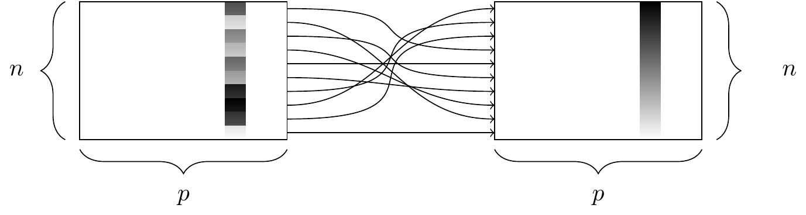
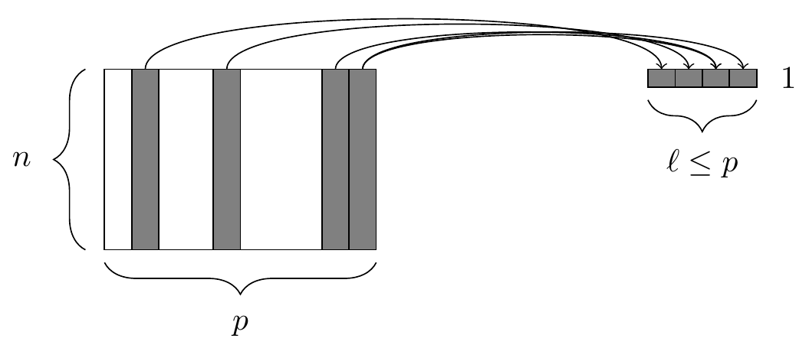

Chapter 4 Data wrangling on one table
This chapter introduces basics of how to wrangle data in R. Wrangling skills will provide an intellectual and practical foundation for working with modern data.
4.1 A grammar for data wrangling
In much the same way that ggplot2 presents a grammar for data graphics, the dplyr package presents a grammar for data wrangling (H. Wickham and Francois 2020).
This package is loaded when library(tidyverse) is run.
Hadley Wickham, one of the authors of dplyr and the tidyverse, has identified five verbs for working with data in a data frame:
select(): take a subset of the columns (i.e., features, variables)filter(): take a subset of the rows (i.e., observations)mutate(): add or modify existing columnsarrange(): sort the rowssummarize(): aggregate the data across rows (e.g., group it according to some criteria)
Each of these functions takes a data frame as its first argument, and returns a data frame. These five verbs can be used in conjunction with each other to provide a powerful means to slice-and-dice a single table of data. As with any grammar, what these verbs mean on their own is one thing, but being able to combine these verbs with nouns (i.e., data frames) and adverbs (i.e., arguments) creates a flexible and powerful way to wrangle data. Mastery of these five verbs can make the computation of most any descriptive statistic a breeze and facilitate further analysis. Wickham’s approach is inspired by his desire to blur the boundaries between R and the ubiquitous relational database querying syntax SQL. When we revisit SQL in Chapter 15, we will see the close relationship between these two computing paradigms. A related concept more popular in business settings is the OLAP (online analytical processing) hypercube, which refers to the process by which multidimensional data is “sliced-and-diced.”
4.1.1 select() and filter()
The two simplest of the five verbs are filter() and select(), which return a subset of the rows or columns of a data frame, respectively.
Generally, if we have a data frame that consists of \(n\) rows and \(p\) columns, Figures 4.1 and 4.2 illustrate the effect of filtering this data frame based on a condition on one of the columns, and selecting a subset of the columns, respectively.

Figure 4.1: The filter() function. At left, a data frame that contains matching entries in a certain column for only a subset of the rows. At right, the resulting data frame after filtering.

Figure 4.2: The select() function. At left, a data frame, from which we retrieve only a few of the columns. At right, the resulting data frame after selecting those columns.
We will demonstrate the use of these functions on the presidential data frame (from the ggplot2 package), which contains \(p=4\) variables about the terms of \(n=11\) recent U.S. presidents.
library(tidyverse)
library(mdsr)
presidential# A tibble: 11 × 4
name start end party
<chr> <date> <date> <chr>
1 Eisenhower 1953-01-20 1961-01-20 Republican
2 Kennedy 1961-01-20 1963-11-22 Democratic
3 Johnson 1963-11-22 1969-01-20 Democratic
4 Nixon 1969-01-20 1974-08-09 Republican
5 Ford 1974-08-09 1977-01-20 Republican
6 Carter 1977-01-20 1981-01-20 Democratic
7 Reagan 1981-01-20 1989-01-20 Republican
8 Bush 1989-01-20 1993-01-20 Republican
9 Clinton 1993-01-20 2001-01-20 Democratic
10 Bush 2001-01-20 2009-01-20 Republican
11 Obama 2009-01-20 2017-01-20 Democratic
To retrieve only the names and party affiliations of these presidents, we would use select().
The first argument to the select() function is the data frame, followed by an arbitrarily long list of column names, separated by commas.
select(presidential, name, party)# A tibble: 11 × 2
name party
<chr> <chr>
1 Eisenhower Republican
2 Kennedy Democratic
3 Johnson Democratic
4 Nixon Republican
5 Ford Republican
6 Carter Democratic
7 Reagan Republican
8 Bush Republican
9 Clinton Democratic
10 Bush Republican
11 Obama Democratic
Similarly, the first argument to filter() is a data frame, and subsequent arguments are logical conditions that are evaluated on any involved columns.
If we want to retrieve only those rows that pertain to Republican presidents, we need to specify that the value of the party variable is equal to Republican.
filter(presidential, party == "Republican")# A tibble: 6 × 4
name start end party
<chr> <date> <date> <chr>
1 Eisenhower 1953-01-20 1961-01-20 Republican
2 Nixon 1969-01-20 1974-08-09 Republican
3 Ford 1974-08-09 1977-01-20 Republican
4 Reagan 1981-01-20 1989-01-20 Republican
5 Bush 1989-01-20 1993-01-20 Republican
6 Bush 2001-01-20 2009-01-20 RepublicanNote that the == is a test for equality.
If we were to use only a single equal sign here, we would be asserting that the value of party was Republican.
This would result in an error.
The quotation marks around Republican are necessary here, since Republican is a literal value, and not a variable name.
Combining the filter() and select() commands enables one to drill down to very specific pieces of information.
For example, we can find which Democratic presidents served since Watergate.
select(
filter(presidential, lubridate::year(start) > 1973 & party == "Democratic"),
name
)# A tibble: 3 × 1
name
<chr>
1 Carter
2 Clinton
3 Obama In the syntax demonstrated above, the filter() operation is nested inside the select() operation.
As noted above, each of the five verbs takes and returns a data frame, which makes this type of nesting possible.
Shortly, we will see how these verbs can be chained together to make rather long expressions that can become very difficult to read.
Instead, we recommend the use of the %>% (pipe) operator.
Pipe-forwarding is an alternative to nesting that yields code that can be easily read from top to bottom.
With the pipe, we can write the same expression as above in this more readable syntax.
presidential %>%
filter(lubridate::year(start) > 1973 & party == "Democratic") %>%
select(name)# A tibble: 3 × 1
name
<chr>
1 Carter
2 Clinton
3 Obama This expression is called a pipeline. Notice how the expression
dataframe %>% filter(condition)
is equivalent to filter(dataframe, condition). In later examples, we will see how this operator can make code more readable and efficient, particularly for complex operations on large data sets.
4.1.2 mutate() and rename()
Frequently, in the process of conducting our analysis, we will create, re-define, and rename some of our variables.
The functions mutate() and rename() provide these capabilities.
A graphical illustration of the mutate() operation is shown in Figure 4.3.

Figure 4.3: The mutate() function. At right, the resulting data frame after adding a new column.
While we have the raw data on when each of these presidents took and relinquished office, we don’t actually have a numeric variable giving the length of each president’s term.
Of course, we can derive this information from the dates given, and add the result as a new column to our data frame.
This date arithmetic is made easier through the use of the lubridate package, which we use to compute the number of years (dyears()) that elapsed since during the interval() from the start until the end of each president’s term.
In this situation, it is generally considered good style to create a new object rather than clobbering the one that comes from an external source.
To preserve the existing presidential data frame, we save the result of mutate() as a new object called my_presidents.
library(lubridate)
my_presidents <- presidential %>%
mutate(term.length = interval(start, end) / dyears(1))
my_presidents# A tibble: 11 × 5
name start end party term.length
<chr> <date> <date> <chr> <dbl>
1 Eisenhower 1953-01-20 1961-01-20 Republican 8
2 Kennedy 1961-01-20 1963-11-22 Democratic 2.84
3 Johnson 1963-11-22 1969-01-20 Democratic 5.16
4 Nixon 1969-01-20 1974-08-09 Republican 5.55
5 Ford 1974-08-09 1977-01-20 Republican 2.45
6 Carter 1977-01-20 1981-01-20 Democratic 4
7 Reagan 1981-01-20 1989-01-20 Republican 8
8 Bush 1989-01-20 1993-01-20 Republican 4
9 Clinton 1993-01-20 2001-01-20 Democratic 8
10 Bush 2001-01-20 2009-01-20 Republican 8
11 Obama 2009-01-20 2017-01-20 Democratic 8 The mutate() function can also be used to modify the data in an existing column.
Suppose that we wanted to add to our data frame a variable containing the year in which each president was elected.
Our first (naïve) attempt might assume that every president was elected in the year before he took office.
Note that mutate() returns a data frame, so if we want to modify our existing data frame, we need to overwrite it with the results.
my_presidents <- my_presidents %>%
mutate(elected = year(start) - 1)
my_presidents# A tibble: 11 × 6
name start end party term.length elected
<chr> <date> <date> <chr> <dbl> <dbl>
1 Eisenhower 1953-01-20 1961-01-20 Republican 8 1952
2 Kennedy 1961-01-20 1963-11-22 Democratic 2.84 1960
3 Johnson 1963-11-22 1969-01-20 Democratic 5.16 1962
4 Nixon 1969-01-20 1974-08-09 Republican 5.55 1968
5 Ford 1974-08-09 1977-01-20 Republican 2.45 1973
6 Carter 1977-01-20 1981-01-20 Democratic 4 1976
7 Reagan 1981-01-20 1989-01-20 Republican 8 1980
8 Bush 1989-01-20 1993-01-20 Republican 4 1988
9 Clinton 1993-01-20 2001-01-20 Democratic 8 1992
10 Bush 2001-01-20 2009-01-20 Republican 8 2000
11 Obama 2009-01-20 2017-01-20 Democratic 8 2008
Some entries in this data set are wrong, because presidential elections are only held every four years.
Lyndon Johnson assumed the office after President John Kennedy was assassinated in 1963, and Gerald Ford took over after President Richard Nixon resigned in 1974.
Thus, there were no presidential elections in 1962 or 1973, as suggested in our data frame.
We should overwrite these values with NA’s—which is how R denotes missing values.
We can use the ifelse() function to do this.
Here, if the value of elected is either 1962 or 1973, we overwrite that value with NA.6
Otherwise, we overwrite it with the same value that it currently has.
In this case, instead of checking to see whether the value of elected equals 1962 or 1973, for brevity we can use the %in% operator to check to see whether the value of elected belongs to the vector consisting of 1962 and 1973.
my_presidents <- my_presidents %>%
mutate(elected = ifelse(elected %in% c(1962, 1973), NA, elected))
my_presidents# A tibble: 11 × 6
name start end party term.length elected
<chr> <date> <date> <chr> <dbl> <dbl>
1 Eisenhower 1953-01-20 1961-01-20 Republican 8 1952
2 Kennedy 1961-01-20 1963-11-22 Democratic 2.84 1960
3 Johnson 1963-11-22 1969-01-20 Democratic 5.16 NA
4 Nixon 1969-01-20 1974-08-09 Republican 5.55 1968
5 Ford 1974-08-09 1977-01-20 Republican 2.45 NA
6 Carter 1977-01-20 1981-01-20 Democratic 4 1976
7 Reagan 1981-01-20 1989-01-20 Republican 8 1980
8 Bush 1989-01-20 1993-01-20 Republican 4 1988
9 Clinton 1993-01-20 2001-01-20 Democratic 8 1992
10 Bush 2001-01-20 2009-01-20 Republican 8 2000
11 Obama 2009-01-20 2017-01-20 Democratic 8 2008
Finally, it is considered bad practice to use periods in the name of functions, data frames, and variables in R. Ill-advised periods could conflict with R’s use of generic functions (i.e., R’s mechanism for method overloading).
Thus, we should change the name of the term.length column that we created earlier.
We can achieve this using the rename() function.
In this book, we will use snake_case for function and variable names.
Don’t use periods in the names of functions, data frames, or variables, as this can be confused with the object-oriented programming model.
my_presidents <- my_presidents %>%
rename(term_length = term.length)
my_presidents# A tibble: 11 × 6
name start end party term_length elected
<chr> <date> <date> <chr> <dbl> <dbl>
1 Eisenhower 1953-01-20 1961-01-20 Republican 8 1952
2 Kennedy 1961-01-20 1963-11-22 Democratic 2.84 1960
3 Johnson 1963-11-22 1969-01-20 Democratic 5.16 NA
4 Nixon 1969-01-20 1974-08-09 Republican 5.55 1968
5 Ford 1974-08-09 1977-01-20 Republican 2.45 NA
6 Carter 1977-01-20 1981-01-20 Democratic 4 1976
7 Reagan 1981-01-20 1989-01-20 Republican 8 1980
8 Bush 1989-01-20 1993-01-20 Republican 4 1988
9 Clinton 1993-01-20 2001-01-20 Democratic 8 1992
10 Bush 2001-01-20 2009-01-20 Republican 8 2000
11 Obama 2009-01-20 2017-01-20 Democratic 8 20084.1.3 arrange()
The function sort() will sort a vector but not a data frame. The function that will sort a data frame is called arrange(), and its behavior is illustrated in Figure 4.4.

Figure 4.4: The arrange() function. At left, a data frame with an ordinal variable. At right, the resulting data frame after sorting the rows in descending order of that variable.
In order to use arrange() on a data frame, you have to specify the data frame, and the column by which you want it to be sorted.
You also have to specify the direction in which you want it to be sorted. Specifying multiple sort conditions will help break ties.
To sort our presidential data frame by the length of each president’s term, we specify that we want the column term_length in descending order.
my_presidents %>%
arrange(desc(term_length))# A tibble: 11 × 6
name start end party term_length elected
<chr> <date> <date> <chr> <dbl> <dbl>
1 Eisenhower 1953-01-20 1961-01-20 Republican 8 1952
2 Reagan 1981-01-20 1989-01-20 Republican 8 1980
3 Clinton 1993-01-20 2001-01-20 Democratic 8 1992
4 Bush 2001-01-20 2009-01-20 Republican 8 2000
5 Obama 2009-01-20 2017-01-20 Democratic 8 2008
6 Nixon 1969-01-20 1974-08-09 Republican 5.55 1968
7 Johnson 1963-11-22 1969-01-20 Democratic 5.16 NA
8 Carter 1977-01-20 1981-01-20 Democratic 4 1976
9 Bush 1989-01-20 1993-01-20 Republican 4 1988
10 Kennedy 1961-01-20 1963-11-22 Democratic 2.84 1960
11 Ford 1974-08-09 1977-01-20 Republican 2.45 NAA number of presidents completed either one or two full terms, and thus have the exact same term length (4 or 8 years, respectively).
To break these ties, we can further sort by party and elected.
my_presidents %>%
arrange(desc(term_length), party, elected)# A tibble: 11 × 6
name start end party term_length elected
<chr> <date> <date> <chr> <dbl> <dbl>
1 Clinton 1993-01-20 2001-01-20 Democratic 8 1992
2 Obama 2009-01-20 2017-01-20 Democratic 8 2008
3 Eisenhower 1953-01-20 1961-01-20 Republican 8 1952
4 Reagan 1981-01-20 1989-01-20 Republican 8 1980
5 Bush 2001-01-20 2009-01-20 Republican 8 2000
6 Nixon 1969-01-20 1974-08-09 Republican 5.55 1968
7 Johnson 1963-11-22 1969-01-20 Democratic 5.16 NA
8 Carter 1977-01-20 1981-01-20 Democratic 4 1976
9 Bush 1989-01-20 1993-01-20 Republican 4 1988
10 Kennedy 1961-01-20 1963-11-22 Democratic 2.84 1960
11 Ford 1974-08-09 1977-01-20 Republican 2.45 NANote that the default sort order is ascending order, so we do not need to specify an order if that is what we want.
4.1.4 summarize() with group_by()
Our last of the five verbs for single-table analysis is summarize(), which is nearly always used in conjunction with group_by().
The previous four verbs provided us with means to manipulate a data frame in powerful and flexible ways.
But the extent of the analysis we can perform with these four verbs alone is limited.
On the other hand, summarize() with group_by() enables us to make comparisons.

Figure 4.5: The summarize() function. At left, a data frame. At right, the resulting data frame after aggregating four of the columns.
When used alone, summarize() collapses a data frame into a single row7.
This is illustrated in Figure 4.5.
Critically, we have to specify how we want to reduce an entire column of data into a single value.
The method of aggregation that we specify controls what will appear in the output.
my_presidents %>%
summarize(
N = n(),
first_year = min(year(start)),
last_year = max(year(end)),
num_dems = sum(party == "Democratic"),
years = sum(term_length),
avg_term_length = mean(term_length)
)# A tibble: 1 × 6
N first_year last_year num_dems years avg_term_length
<int> <dbl> <dbl> <int> <dbl> <dbl>
1 11 1953 2017 5 64 5.82The first argument to summarize() is a data frame, followed by a list of variables that will appear in the output.
Note that every variable in the output is defined by operations performed on vectors—not on individual values.
This is essential, since if the specification of an output variable is not an operation on a vector, there is no way for R to know how to collapse each column.
In this example, the function n() simply counts the number of rows.
This is often useful information.
To help ensure that data aggregation is being done correctly, use n() every time you use summarize().
The next two variables determine the first year that one of these presidents assumed office.
This is the smallest year in the start column.
Similarly, the most recent year is the largest year in the end column.
The variable num_dems simply counts the number of rows in which the value of the party variable was Democratic.
Finally, the last two variables compute the sum and average of the term_length variable.
We see that 5 of the 11 presidents who served from 1953 to 2017 were Democrats, and the average term length over these 64 years was about 5.8 years.
This begs the question of whether Democratic or Republican presidents served a longer average term during this time period.
To figure this out, we can just execute summarize() again, but this time, instead of the first argument being the data frame my_presidents, we will specify that the rows of the my_presidents data frame should be grouped by the values of the party variable.
In this manner, the same computations as above will be carried out for each party separately.
my_presidents %>%
group_by(party) %>%
summarize(
N = n(),
first_year = min(year(start)),
last_year = max(year(end)),
num_dems = sum(party == "Democratic"),
years = sum(term_length),
avg_term_length = mean(term_length)
)# A tibble: 2 × 7
party N first_year last_year num_dems years avg_term_length
<chr> <int> <dbl> <dbl> <int> <dbl> <dbl>
1 Democratic 5 1961 2017 5 28 5.6
2 Republican 6 1953 2009 0 36 6 This provides us with the valuable information that the six Republican presidents served an average of 6 years in office, while the five Democratic presidents served an average of only 5.6. As with all of the dplyr verbs, the final output is a data frame.
In this chapter, we are using the dplyr package. The most common way to extract data from data tables is with SQL (structured query language). We’ll introduce SQL in Chapter 15. The dplyr package provides an interface that fits more smoothly into an overall data analysis workflow and is, in our opinion, easier to learn. Once you understand data wrangling with dplyr, it’s straightforward to learn SQL if needed. dplyr can also work as an interface to many systems that use SQL internally.
4.2 Extended example: Ben’s time with the Mets
In this extended example, we will continue to explore Sean Lahman’s historical baseball database, which contains complete seasonal records for all players on all Major League Baseball (MLB) teams going back to 1871. These data are made available in R via the Lahman package (Friendly et al. 2021). Here again, while domain knowledge may be helpful, it is not necessary to follow the example. To flesh out your understanding, try reading the Wikipedia entry on Major League Baseball.
library(Lahman)
dim(Teams)[1] 2955 48The Teams table contains the seasonal results of every major league team in every season since 1871.
There are 2955 rows and 48 columns in this table, which is far too much to show here, and would make for a quite unwieldy spreadsheet.
Of course, we can take a peek at what this table looks like by printing the first few rows of the table to the screen with the head() command, but we won’t print that on the page of this book.
Ben Baumer worked for the New York Mets from 2004 to 2012.
How did the team do during those years?
We can use filter() and select() to quickly identify only those pieces of information that we care about.
mets <- Teams %>%
filter(teamID == "NYN")
my_mets <- mets %>%
filter(yearID %in% 2004:2012)
my_mets %>%
select(yearID, teamID, W, L) yearID teamID W L
1 2004 NYN 71 91
2 2005 NYN 83 79
3 2006 NYN 97 65
4 2007 NYN 88 74
5 2008 NYN 89 73
6 2009 NYN 70 92
7 2010 NYN 79 83
8 2011 NYN 77 85
9 2012 NYN 74 88Notice that we have broken this down into three steps. First, we filter the rows of the Teams data frame into only those teams that correspond to the New York Mets.8
There are 59 of those, since the Mets joined the National League in 1962.
nrow(mets)[1] 59Next, we filtered these data so as to include only those seasons in which Ben worked for the team—those with yearID between 2004 and 2012.
Finally, we printed to the screen only those columns that were relevant to our question: the year, the team’s ID, and the number of wins and losses that the team had.
While this process is logical, the code can get unruly, since two ancillary data frames (mets and my_mets) were created during the process.
It may be the case that we’d like to use data frames later in the analysis.
But if not, they are just cluttering our workspace, and eating up memory.
A more streamlined way to achieve the same result would be to nest these commands together.
select(filter(Teams, teamID == "NYN" & yearID %in% 2004:2012),
yearID, teamID, W, L) yearID teamID W L
1 2004 NYN 71 91
2 2005 NYN 83 79
3 2006 NYN 97 65
4 2007 NYN 88 74
5 2008 NYN 89 73
6 2009 NYN 70 92
7 2010 NYN 79 83
8 2011 NYN 77 85
9 2012 NYN 74 88This way, no additional data frames were created. However, it is easy to see that as we nest more and more of these operations together, this code could become difficult to read. To maintain readability, we instead chain these operations, rather than nest them (and get the same exact results).
Teams %>%
filter(teamID == "NYN" & yearID %in% 2004:2012) %>%
select(yearID, teamID, W, L)This piping syntax
(introduced in Section 4.1.1) is
provided by the dplyr package.
It retains the step-by-step logic of our original code, while being easily readable, and efficient with respect to memory and the creation of temporary data frames.
In fact, there are also performance enhancements under the hood that make this the most efficient way to do these kinds of computations.
For these reasons we will use this syntax whenever possible throughout the book.
Note that we only have to type Teams once—it is implied by the pipe operator (%>%) that the subsequent command takes the previous data frame as its first argument. Thus, df %>% f(y) is equivalent to f(df, y).
We’ve answered the simple question of how the Mets performed during the time that Ben was there, but since we are data scientists, we are interested in deeper questions. For example, some of these seasons were subpar—the Mets had more losses than wins. Did the team just get unlucky in those seasons? Or did they actually play as badly as their record indicates?
In order to answer this question, we need a model for expected winning percentage. It turns out that one of the most widely used contributions to the field of baseball analytics (courtesy of Bill James) is exactly that. This model translates the number of runs9 that a team scores and allows over the course of an entire season into an expectation for how many games they should have won. The simplest version of this model is this:
\[
\widehat{WPct} = \frac{1}{1 + \left( \frac{RA}{RS} \right)^2} \,,
\]
where \(RA\) is the number of runs the team allows to be scored, \(RS\) is the number of runs that the team scores, and \(\widehat{WPct}\) is the team’s expected winning percentage.
Luckily for us, the runs scored and allowed are present in the Teams table, so let’s grab them and save them in a new data frame.
mets_ben <- Teams %>%
select(yearID, teamID, W, L, R, RA) %>%
filter(teamID == "NYN" & yearID %in% 2004:2012)
mets_ben yearID teamID W L R RA
1 2004 NYN 71 91 684 731
2 2005 NYN 83 79 722 648
3 2006 NYN 97 65 834 731
4 2007 NYN 88 74 804 750
5 2008 NYN 89 73 799 715
6 2009 NYN 70 92 671 757
7 2010 NYN 79 83 656 652
8 2011 NYN 77 85 718 742
9 2012 NYN 74 88 650 709First, note that the runs-scored variable is called R in the Teams table, but to stick with our notation we want to rename it RS.
mets_ben <- mets_ben %>%
rename(RS = R) # new name = old name
mets_ben yearID teamID W L RS RA
1 2004 NYN 71 91 684 731
2 2005 NYN 83 79 722 648
3 2006 NYN 97 65 834 731
4 2007 NYN 88 74 804 750
5 2008 NYN 89 73 799 715
6 2009 NYN 70 92 671 757
7 2010 NYN 79 83 656 652
8 2011 NYN 77 85 718 742
9 2012 NYN 74 88 650 709Next, we need to compute the team’s actual winning percentage in each of these seasons.
Thus, we need to add a new column to our data frame, and we do this with the mutate() command.
mets_ben <- mets_ben %>%
mutate(WPct = W / (W + L))
mets_ben yearID teamID W L RS RA WPct
1 2004 NYN 71 91 684 731 0.438
2 2005 NYN 83 79 722 648 0.512
3 2006 NYN 97 65 834 731 0.599
4 2007 NYN 88 74 804 750 0.543
5 2008 NYN 89 73 799 715 0.549
6 2009 NYN 70 92 671 757 0.432
7 2010 NYN 79 83 656 652 0.488
8 2011 NYN 77 85 718 742 0.475
9 2012 NYN 74 88 650 709 0.457We also need to compute the model estimates for winning percentage.
mets_ben <- mets_ben %>%
mutate(WPct_hat = 1 / (1 + (RA/RS)^2))
mets_ben yearID teamID W L RS RA WPct WPct_hat
1 2004 NYN 71 91 684 731 0.438 0.467
2 2005 NYN 83 79 722 648 0.512 0.554
3 2006 NYN 97 65 834 731 0.599 0.566
4 2007 NYN 88 74 804 750 0.543 0.535
5 2008 NYN 89 73 799 715 0.549 0.555
6 2009 NYN 70 92 671 757 0.432 0.440
7 2010 NYN 79 83 656 652 0.488 0.503
8 2011 NYN 77 85 718 742 0.475 0.484
9 2012 NYN 74 88 650 709 0.457 0.457The expected number of wins is then equal to the product of the expected winning percentage times the number of games.
mets_ben <- mets_ben %>%
mutate(W_hat = WPct_hat * (W + L))
mets_ben yearID teamID W L RS RA WPct WPct_hat W_hat
1 2004 NYN 71 91 684 731 0.438 0.467 75.6
2 2005 NYN 83 79 722 648 0.512 0.554 89.7
3 2006 NYN 97 65 834 731 0.599 0.566 91.6
4 2007 NYN 88 74 804 750 0.543 0.535 86.6
5 2008 NYN 89 73 799 715 0.549 0.555 90.0
6 2009 NYN 70 92 671 757 0.432 0.440 71.3
7 2010 NYN 79 83 656 652 0.488 0.503 81.5
8 2011 NYN 77 85 718 742 0.475 0.484 78.3
9 2012 NYN 74 88 650 709 0.457 0.457 74.0In this case, the Mets’ fortunes were better than expected in three of these seasons, and worse than expected in the other six.
filter(mets_ben, W >= W_hat) yearID teamID W L RS RA WPct WPct_hat W_hat
1 2006 NYN 97 65 834 731 0.599 0.566 91.6
2 2007 NYN 88 74 804 750 0.543 0.535 86.6
3 2012 NYN 74 88 650 709 0.457 0.457 74.0filter(mets_ben, W < W_hat) yearID teamID W L RS RA WPct WPct_hat W_hat
1 2004 NYN 71 91 684 731 0.438 0.467 75.6
2 2005 NYN 83 79 722 648 0.512 0.554 89.7
3 2008 NYN 89 73 799 715 0.549 0.555 90.0
4 2009 NYN 70 92 671 757 0.432 0.440 71.3
5 2010 NYN 79 83 656 652 0.488 0.503 81.5
6 2011 NYN 77 85 718 742 0.475 0.484 78.3Naturally, the Mets experienced ups and downs during Ben’s time with the team. Which seasons were best? To figure this out, we can simply sort the rows of the data frame.
arrange(mets_ben, desc(WPct)) yearID teamID W L RS RA WPct WPct_hat W_hat
1 2006 NYN 97 65 834 731 0.599 0.566 91.6
2 2008 NYN 89 73 799 715 0.549 0.555 90.0
3 2007 NYN 88 74 804 750 0.543 0.535 86.6
4 2005 NYN 83 79 722 648 0.512 0.554 89.7
5 2010 NYN 79 83 656 652 0.488 0.503 81.5
6 2011 NYN 77 85 718 742 0.475 0.484 78.3
7 2012 NYN 74 88 650 709 0.457 0.457 74.0
8 2004 NYN 71 91 684 731 0.438 0.467 75.6
9 2009 NYN 70 92 671 757 0.432 0.440 71.3In 2006, the Mets had the best record in baseball during the regular season and nearly made the World Series. How do these seasons rank in terms of the team’s performance relative to our model?
mets_ben %>%
mutate(Diff = W - W_hat) %>%
arrange(desc(Diff)) yearID teamID W L RS RA WPct WPct_hat W_hat Diff
1 2006 NYN 97 65 834 731 0.599 0.566 91.6 5.3840
2 2007 NYN 88 74 804 750 0.543 0.535 86.6 1.3774
3 2012 NYN 74 88 650 709 0.457 0.457 74.0 0.0199
4 2008 NYN 89 73 799 715 0.549 0.555 90.0 -0.9605
5 2009 NYN 70 92 671 757 0.432 0.440 71.3 -1.2790
6 2011 NYN 77 85 718 742 0.475 0.484 78.3 -1.3377
7 2010 NYN 79 83 656 652 0.488 0.503 81.5 -2.4954
8 2004 NYN 71 91 684 731 0.438 0.467 75.6 -4.6250
9 2005 NYN 83 79 722 648 0.512 0.554 89.7 -6.7249It appears that 2006 was the Mets’ most fortunate year—since they won five more games than our model predicts—but 2005 was the least fortunate—since they won almost seven games fewer than our model predicts. This type of analysis helps us understand how the Mets performed in individual seasons, but we know that any randomness that occurs in individual years is likely to average out over time. So while it is clear that the Mets performed well in some seasons and poorly in others, what can we say about their overall performance?
We can easily summarize a single variable with the skim() command from the mdsr package.
mets_ben %>%
skim(W)
── Variable type: numeric ──────────────────────────────────────────────────
var n na mean sd p0 p25 p50 p75 p100
1 W 9 0 80.9 9.10 70 74 79 88 97This tells us that the Mets won nearly 81 games on average during Ben’s tenure, which corresponds almost exactly to a 0.500 winning percentage, since there are 162 games in a regular season.
But we may be interested in aggregating more than one variable at a time.
To do this, we use summarize().
mets_ben %>%
summarize(
num_years = n(),
total_W = sum(W),
total_L = sum(L),
total_WPct = sum(W) / sum(W + L),
sum_resid = sum(W - W_hat)
) num_years total_W total_L total_WPct sum_resid
1 9 728 730 0.499 -10.6In these nine years, the Mets had a combined record of 728 wins and 730 losses, for an overall winning percentage of .499. Just one extra win would have made them exactly 0.500! (If we could pick which game, we would definitely pick the final game of the 2007 season. A win there would have resulted in a playoff berth.) However, we’ve also learned that the team under-performed relative to our model by a total of 10.6 games over those nine seasons.
Usually, when we are summarizing a data frame like we did above, it is interesting to consider different groups.
In this case, we can discretize these years into three chunks: one for each of the three general managers under whom Ben worked. Jim Duquette was the Mets’ general manager in 2004, Omar Minaya from 2005 to 2010, and Sandy Alderson from 2011 to 2012.
We can define these eras using two nested ifelse() functions.
mets_ben <- mets_ben %>%
mutate(
gm = ifelse(
yearID == 2004,
"Duquette",
ifelse(
yearID >= 2011,
"Alderson",
"Minaya")
)
)Another, more scalable approach to accomplishing this same task is to use a case_when() expression.
mets_ben <- mets_ben %>%
mutate(
gm = case_when(
yearID == 2004 ~ "Duquette",
yearID >= 2011 ~ "Alderson",
TRUE ~ "Minaya"
)
)Don’t use nested ifelse() statements: case_when() is far simpler.
Next, we use the gm variable to define these groups with the group_by() operator.
The combination of summarizing data by groups can be very powerful.
Note that while the Mets were far more successful during Minaya’s regime (i.e., many more wins than losses), they did not meet expectations in any of the three periods.
mets_ben %>%
group_by(gm) %>%
summarize(
num_years = n(),
total_W = sum(W),
total_L = sum(L),
total_WPct = sum(W) / sum(W + L),
sum_resid = sum(W - W_hat)
) %>%
arrange(desc(sum_resid))# A tibble: 3 × 6
gm num_years total_W total_L total_WPct sum_resid
<chr> <int> <int> <int> <dbl> <dbl>
1 Alderson 2 151 173 0.466 -1.32
2 Duquette 1 71 91 0.438 -4.63
3 Minaya 6 506 466 0.521 -4.70The full power of the chaining operator is revealed below, where we do all the analysis at once, but retain the step-by-step logic.
Teams %>%
select(yearID, teamID, W, L, R, RA) %>%
filter(teamID == "NYN" & yearID %in% 2004:2012) %>%
rename(RS = R) %>%
mutate(
WPct = W / (W + L),
WPct_hat = 1 / (1 + (RA/RS)^2),
W_hat = WPct_hat * (W + L),
gm = case_when(
yearID == 2004 ~ "Duquette",
yearID >= 2011 ~ "Alderson",
TRUE ~ "Minaya"
)
) %>%
group_by(gm) %>%
summarize(
num_years = n(),
total_W = sum(W),
total_L = sum(L),
total_WPct = sum(W) / sum(W + L),
sum_resid = sum(W - W_hat)
) %>%
arrange(desc(sum_resid))# A tibble: 3 × 6
gm num_years total_W total_L total_WPct sum_resid
<chr> <int> <int> <int> <dbl> <dbl>
1 Alderson 2 151 173 0.466 -1.32
2 Duquette 1 71 91 0.438 -4.63
3 Minaya 6 506 466 0.521 -4.70Even more generally, we might be more interested in how the Mets performed relative to our model, in the context of all teams during that 9-year period.
All we need to do is remove the teamID filter and group by franchise (franchID) instead.
Teams %>%
select(yearID, teamID, franchID, W, L, R, RA) %>%
filter(yearID %in% 2004:2012) %>%
rename(RS = R) %>%
mutate(
WPct = W / (W + L),
WPct_hat = 1 / (1 + (RA/RS)^2),
W_hat = WPct_hat * (W + L)
) %>%
group_by(franchID) %>%
summarize(
num_years = n(),
total_W = sum(W),
total_L = sum(L),
total_WPct = sum(W) / sum(W + L),
sum_resid = sum(W - W_hat)
) %>%
arrange(sum_resid) %>%
head(6)# A tibble: 6 × 6
franchID num_years total_W total_L total_WPct sum_resid
<fct> <int> <int> <int> <dbl> <dbl>
1 TOR 9 717 740 0.492 -29.2
2 ATL 9 781 677 0.536 -24.0
3 COL 9 687 772 0.471 -22.7
4 CHC 9 706 750 0.485 -14.5
5 CLE 9 710 748 0.487 -13.9
6 NYM 9 728 730 0.499 -10.6We can see now that only five other teams fared worse than the Mets,10 relative to our model, during this time period. Perhaps they are cursed!
4.3 Further resources
Hadley Wickham is an influential innovator in the field of statistical computing. Along with his colleagues at RStudio and other organizations, he has made significant contributions to improve data wrangling in R. These packages are called the tidyverse, and are now manageable through a single tidyverse (Hadley Wickham 2021g) package. His papers and vignettes describing widely-used packages such as dplyr (H. Wickham and Francois 2020) and tidyr (Hadley Wickham 2020c) are highly recommended reading. Finzer (2013) writes of a “data habit of mind” that needs to be inculcated among data scientists. The RStudio data wrangling cheat sheet is a useful reference.
4.4 Exercises
Problem 1 (Easy): Here is a random subset of the babynames data frame in the babynames package:
Random_subset# A tibble: 10 × 5
year sex name n prop
<dbl> <chr> <chr> <int> <dbl>
1 2003 M Bilal 146 0.0000695
2 1999 F Terria 23 0.0000118
3 2010 F Naziyah 45 0.0000230
4 1989 F Shawana 41 0.0000206
5 1989 F Jessi 210 0.000105
6 1928 M Tillman 43 0.0000377
7 1981 F Leslee 83 0.0000464
8 1981 F Sherise 27 0.0000151
9 1920 F Marquerite 26 0.0000209
10 1941 M Lorraine 24 0.0000191For each of the following tables wrangled from Random_subset, figure out what dplyr wrangling statement will produce the result.
- Hint: Both rows and variables are missing from the original
# A tibble: 4 × 4
year sex name n
<dbl> <chr> <chr> <int>
1 2010 F Naziyah 45
2 1989 F Shawana 41
3 1928 M Tillman 43
4 1981 F Leslee 83- Hint: the
nchar()function is used in the statement.
# A tibble: 2 × 5
year sex name n prop
<dbl> <chr> <chr> <int> <dbl>
1 1999 F Terria 23 0.0000118
2 1981 F Leslee 83 0.0000464- Hint: Note the new column, which is constructed from
nandprop.
# A tibble: 2 × 6
year sex name n prop total
<dbl> <chr> <chr> <int> <dbl> <dbl>
1 1989 F Shawana 41 0.0000206 1992225.
2 1989 F Jessi 210 0.000105 1991843.- Hint: All the years are still there, but there are only 8 rows as opposed to the original 10 rows.
# A tibble: 8 × 2
year total
<dbl> <int>
1 1920 26
2 1928 43
3 1941 24
4 1981 110
5 1989 251
6 1999 23
7 2003 146
8 2010 45Problem 2 (Easy): We’ll be working with the babynames data frame in the babynames package. To remind you what babynames looks like, here are a few rows.
# A tibble: 3 × 5
year sex name n prop
<dbl> <chr> <chr> <int> <dbl>
1 2004 M Arjun 250 0.000118
2 1894 F Fedora 5 0.0000212
3 1952 F Donalda 10 0.00000526Say what’s wrong (if anything) with each of the following wrangling commands.
babynames %>% select(n > 100)babynames %>% select(- year)babynames %>% mutate(name_length == nchar(name))babynames %>% sex == M %>% select(-prop)babynames %>% select(year, year, sex)babynames %>% group_by(n) %>% summarize(ave = mean(n))babynames %>% group_by(n > 100) %>% summarize(total = sum(n))
Problem 3 (Easy): Consider the following pipeline:
library(tidyverse)
mtcars %>%
group_by(cyl) %>%
summarize(avg_mpg = mean(mpg)) %>%
filter(am == 1)What is the problem with this pipeline?
Problem 4 (Easy): Define two new variables in the Teams data frame in the Lahman package.
batting average (\(BA\)). Batting average is the ratio of hits (
H) to at-bats (AB).slugging percentage (\(SLG\)). Slugging percentage is total bases divided by at-bats. To compute total bases, you get 1 for a single, 2 for a double, 3 for a triple, and 4 for a home run.
Plot out the \(SLG\) versus
yearID, showing the individual teams and a smooth curve.Same as (c), but plot \(BA\) versus year.
Problem 5 (Easy): Consider the following pipeline:
mtcars %>%
group_by(cyl) %>%
summarize(
N = n(),
avg_mpg = mean(mpg)
)# A tibble: 3 × 3
cyl N avg_mpg
<dbl> <int> <dbl>
1 4 11 26.7
2 6 7 19.7
3 8 14 15.1What is the real-world meaning of the variable N in the result set?
Problem 6 (Easy): Each of these tasks can be performed using a single data verb. For each task, say which verb it is:
- Find the average of one of the variables.
- Add a new column that is the ratio between two variables.
- Sort the cases in descending order of a variable.
- Create a new data table that includes only those cases that meet a criterion.
- From a data table with three categorical variables A, B, and C, and a quantitative variable X, produce a data frame that has the same cases but only the variables A and X.
Problem 7 (Medium): Using the Teams data frame in the Lahman package, display the top-5 teams ranked in terms of slugging percentage (\(SLG\)) in Major League Baseball history. Repeat this using teams since 1969. Slugging percentage is total bases divided by at-bats. To compute total bases, you get 1 for a single, 2 for a double, 3 for a triple, and 4 for a home run.
Problem 8 (Medium): Using the Teams data frame in the Lahman package:
Plot
SLGversusyearIDsince 1954 conditioned by league (American vs. National, seelgID). Slugging percentage is total bases divided by at-bats. To compute total bases, you get 1 for a single, 2 for a double, 3 for a triple, and 4 for a home run.Is slugging percentage typically higher in the American League (AL) or the National League (NL)? Can you think of why this might be the case?
Problem 9 (Medium): Use the nycflights13 package and the flights data frame to answer the following questions: What month had the highest proportion of cancelled flights? What month had the lowest? Interpret any seasonal patterns.
Problem 10 (Medium): Using the Teams data frame in the Lahman package:
Create a factor called
electionthat divides theyearIDinto 4-year blocks that correspond to U.S. presidential terms. The first presidential term started in 1788. They each last 4 years and are still on the schedule set in 1788.During which term have the most home runs been hit?
Problem 11 (Medium): The Violations data set in the mdsr package contains information regarding the outcome of health inspections of restaurants in New York City. Use these data to calculate the median violation score by zip code for zip codes in Manhattan with 50 or more inspections. What pattern do you see between the number of inspections and the median score?
Problem 12 (Medium): The nycflights13 package includes a table (weather) that describes the weather during 2013. Use that table to answer the following questions:
What is the distribution of temperature in July, 2013? Identify any important outliers in terms of the
wind_speedvariable.What is the relationship between
dewpandhumid?What is the relationship between
precipandvisib?
Problem 13 (Medium): The Major League Baseball Angels have at times been called the California Angels (CAL), the Anaheim Angels (ANA), and the Los Angeles Angels of Anaheim (LAA). Using the Teams data frame in the Lahman package:
Find the 10 most successful seasons in Angels history, defining “successful” as the fraction of regular-season games won in the year. In the table you create, include the
yearID,teamID,lgID,W,L, andWSWin. See the documentation forTeamsfor the definition of these variables.Have the Angels ever won the World Series?
Problem 14 (Medium): Use the nycflights13 package and the flights data frame to answer the following question: What plane (specified by the tailnum variable) traveled the most times from New York City airports in 2013? Plot the number of trips per week over the year.
Problem 15 (Hard): Replicate the wrangling to create the house_elections table in the fec package from the original Excel source file.
4.5 Supplementary exercises
Available at https://mdsr-book.github.io/mdsr2e/ch-dataI.html#dataI-online-exercises
Problem 1 (Easy): Which dplyr operation is depicted below?

Problem 2 (Easy): Which dplyr operation is depicted below?

Problem 3 (Easy): Which dplyr operation is depicted below?

Problem 4 (Easy): Which dplyr operation is depicted below?

Problem 5 (Easy): Which dplyr operation is depicted below?

Problem 6 (Easy): Which dplyr operation is depicted below?

Johnson was elected in 1964 as an incumbent.↩︎
This is no longer technically true, but it is still a helpful conceptual construction, especially for novice learners.↩︎
The
teamIDvalue ofNYNstands for the New York National League club.↩︎In baseball, a team scores a run when a player traverses the bases and return to home plate. The team with the most runs in each game wins, and no ties are allowed.↩︎
Note that whereas the
teamIDthat corresponds to the Mets isNYN, the value of thefranchIDvariable isNYM.↩︎